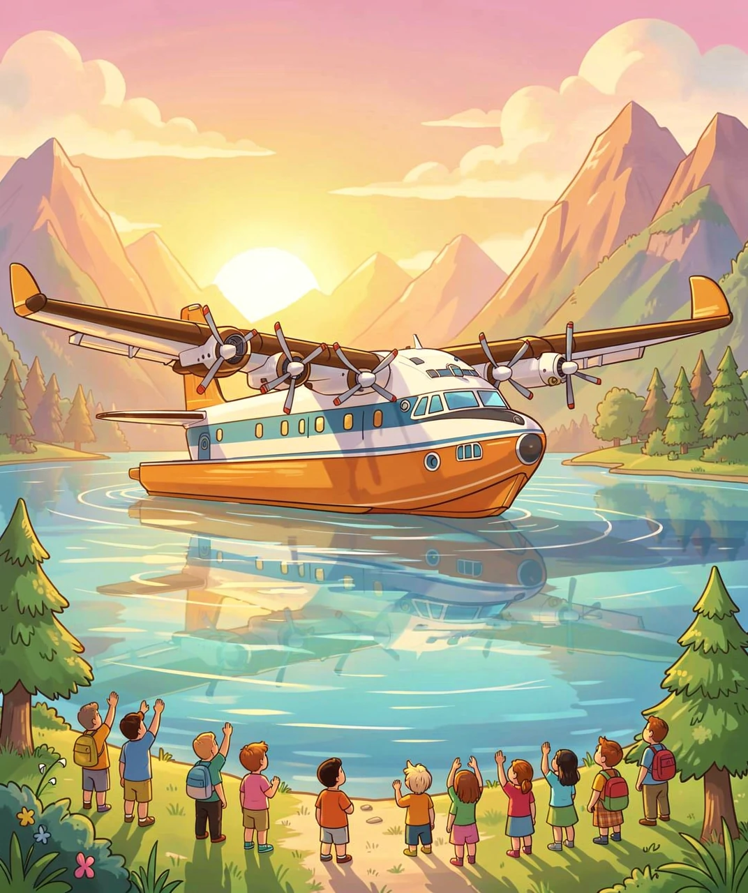
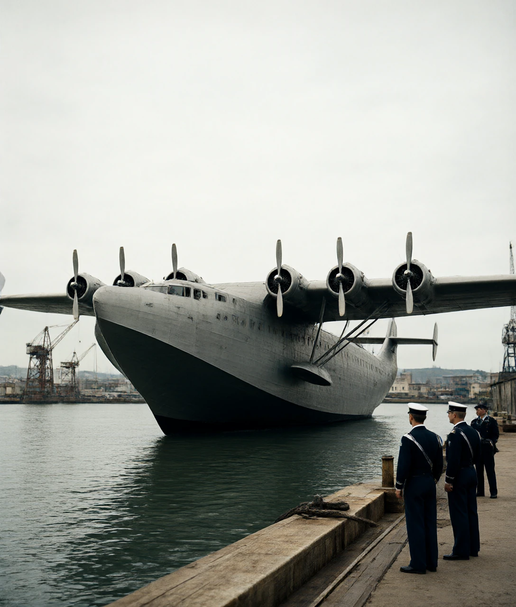
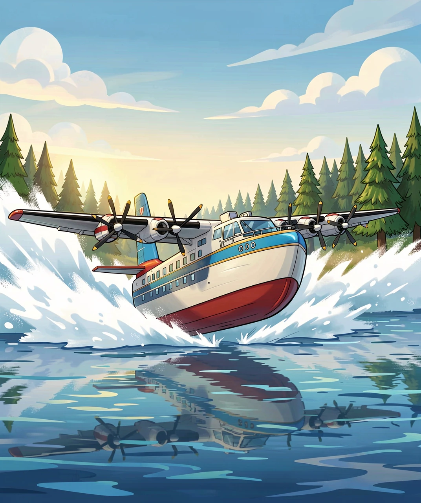
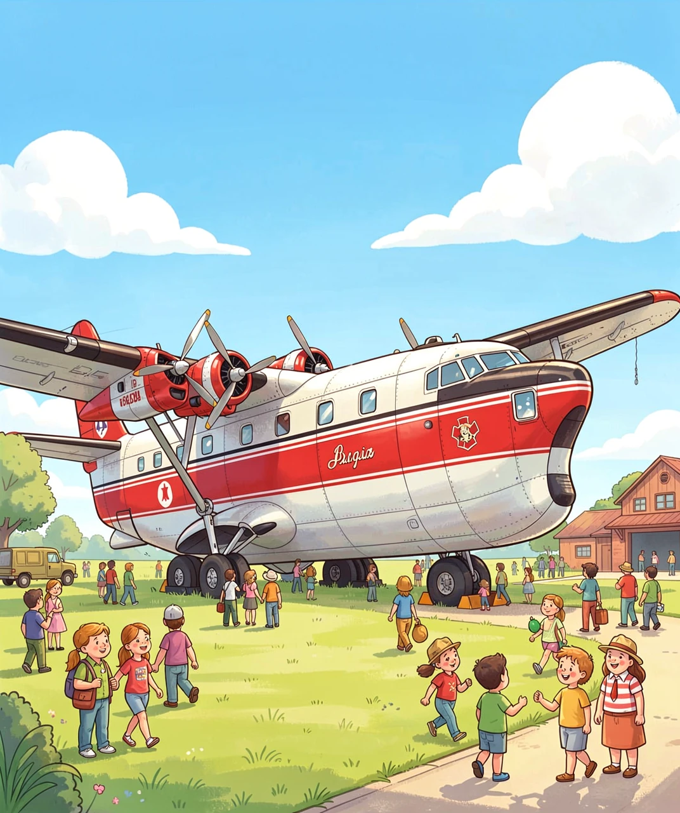
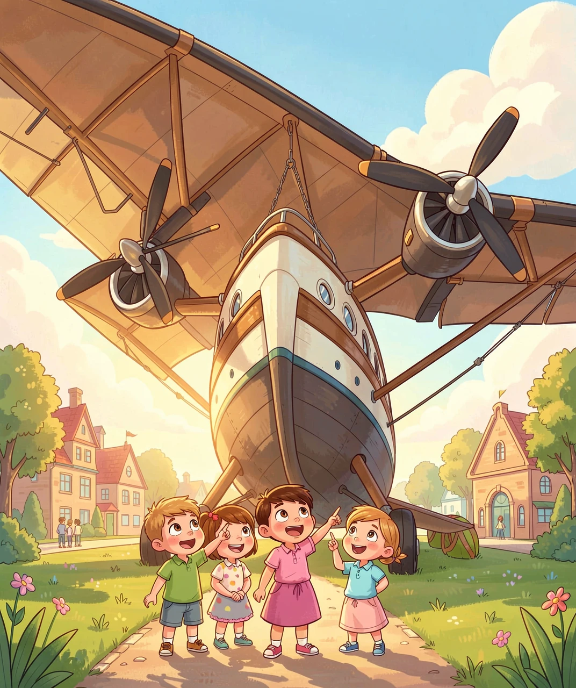

它飞了七十九年，最后停在了博物馆的草地上

2024 年 8 月 11 日下午，加拿大西海岸的一个湖（Sproat Lake）边上，挤满了人。
他们来看一架飞机起飞。这架飞机老得离谱——1945 年造出来的，比在场大多数人的爸爸妈妈都老。它的名字叫「夏威夷火星号」（Hawaii Mars）。
它慢慢滑到湖面上，四台发动机的螺旋桨越转越快，水花被吹成一大片白雾。然后它抬起头，离开了水面。
天上有九架喷气式教练机排着队给它伴飞。沿着温哥华岛，它飞过了好几个小镇，每个镇的人都跑到岸边抬头看。傍晚，它落在一片海湾里，后来被拖上岸、架上一个能转 360 度的拖车，运进了一座航空博物馆。
自此，天空中再也没有这种飞机了。
这一篇，我们要讲清楚两件事：它的前半生是怎么来的，后半生又为什么走上一条完全没人预料到的路。
要看懂这架飞机，得先回到 1940 年前后，问一个最朴素的问题：
飞机为什么需要一个「机场」？
因为飞机在地面上跑不快，飞不起来。飞机的机翼要产生升力，升力靠的是速度——空气从机翼上流过越快，压差越大，托起来的力量就越大。而要加速到能起飞的速度，需要一条又长又平又硬的路。
二战前，太平洋上到处是水。从美国西海岸飞到夏威夷，中间三千多公里，全是海。那时候没有今天这种遍布岛屿的大型机场，也没有能一口气飞这么远的可靠飞机。

于是工程师想到了一个很聪明的办法：既然到处都有水，那就把水面当成跑道。
水是平的，而且到处都是；水面足够长，长到几乎无限。这就是「水上飞机」（flying boat，飞船）流行起来的根本原因——它不是一种爱好，它是当年唯一现实的长途越洋方案。
美国海军 1938 年向马丁公司提出要求：造一架能横跨大洋、飞得特别远的巨型水上飞机，用来巡逻和运输。原型机编号 XPB2M-1，名字就叫 Mars——火星。
工程师怎么把它做大的？方法特别实在：把已经在用的 PBM「水手」巡逻水上飞机，按比例放大。发动机多加两台，机翼加长，机身做成船的样子。1942 年 6 月 23 日，它第一次飞了起来。
把飞机造成船的样子，听起来只是外形问题。其实不是——它牵扯到三组互相打架的物理要求。
第一件：它得浮得起来。
船能浮在水上，是阿基米德发现的道理：物体排开多少水，水就给它多大的向上托力。火星号装满东西重七十多吨，这就意味着它的机身（船体）必须排开七十多吨的水才能不沉。所以它的船身做得又宽又深，像一艘真正的船。
可是宽大的船身飞起来时是个巨大的「风口袋」，会增加阻力。飞机想要细长，船想要胖大——这是第一个矛盾。
第二件：它得从水里「挣脱」出来。
这是水上飞机最反直觉的地方。你以为难点是飞起来，其实难点是加速到飞起来之前的那一段。
飞机停在水里时，整个船身泡在水里，水对它的阻力极大。随着速度增加，水会沿着船身往上爬，把飞机「吸」住不放。这个阶段水阻最大，飞机最吃力。
突破点叫「上台阶」（on the step）。工程师在船身底部做了一道横向的折角（断阶），让水和船身之间进入空气，把吸力切断。一旦飞机「踩上台阶」，船身大部分离开水面，只剩一小片在水上滑行——阻力突然掉下来，飞机就能继续加速、抬头、离水。

这也是为什么它需要四台发动机——不是因为它想飞得更快，而是因为从水里挣脱的那几十秒，需要非常大的推力，而且还得留出安全余量：万一有一台坏了，剩下的还要能把飞机从水面上拉起来。在湖中间，你可没法靠边停车。
第三件：它得装得下、飞得远。
四台 18 缸的星型活塞发动机（Wright R-3350），巡航速度大约 300 公里每小时。这个速度今天看来慢，但它能一次带走成吨的货物，跨越大洋。
它真的干过大事。1949 年 3 月，同型的 Caroline Mars 一次载了 269 人从圣迭戈飞到旧金山，创下了当时的载客世界纪录。
好日子没过多久。
1950 年代，喷气式飞机出现了，陆地上的机场也越修越多、越修越长。这时候人们重新算了一笔账：
水上飞机把「水面」当跑道，好处是随处可降；代价是——水会拖住你。船身宽大，阻力高，速度上不去；而喷气机在又长又平的混凝土跑道上，可以轻松跑到 900 公里每小时。
当「跑道」不再是稀缺资源，「水面」这个优势就消失了。1956 年，美国海军把剩下的火星号全部推到岸边封存。巨型水上飞机这个物种，眼看着就要灭绝。
但故事在这里拐了一个大弯。
1959 年，加拿大不列颠哥伦比亚省（BC）的林业公司把这批飞机买了下来，改装成了灭火飞机（water bomber）。
这个改装的思路，简直是给水上飞机量身定做的：
扑森林大火，最缺的从来不是水，而是「把水快速送到火上」的能力。
普通消防飞机得飞回机场、落地、加水、再起飞，一个来回几十分钟。而水上飞机不用落地——它只要从湖面上低空滑过，把一根管子伸进水里，边滑边吸。火星号吸满 27000 升（约 27 吨）水，只需要在水面上滑行 22 秒。然后它飞起来，一次把这 27 吨水倒在相当于四个足球场那么大的火场上。
就这样，这些本该进废铁厂的老飞机，在加拿大西海岸又干了五十年的活，红白涂装成了那一带最有辨识度的风景。很多当地人的房子，是这几架 1945 年的老飞机保住的。
代价也在累积。1961 年一架在事故中坠毁，1962 年另一架被风暴彻底损坏。到最后，只剩下两架：夏威夷火星号和菲律宾火星号。
夏威夷火星号一直飞到 2016 年，然后停在了湖上，一停就是八年。
2024 年 8 月 11 日，它完成了最后一次飞行，进了 BC 航空博物馆。另一架菲律宾火星号在 2025 年 2 月飞到美国亚利桑那州的皮马航空博物馆。为了这次飞行，工程师把夏威夷火星号上还能用的发动机拆下来装到它身上——因为世界上已经找不到备件了。

那么，巨型水上飞机的故事结束了吗？
没有完全结束。中国正在造的 AG600「鲲龙」，就是同一思路的现代版——一架专门用来森林灭火和水上救援的大型水陆两栖飞机。有意思的是，2015 年，火星号还短期租给过国际试飞员学校，用来帮中国的大型水陆两栖飞机项目做大飞机水上操纵的训练。老师，是七十岁的老飞机。
但它和火星号有一个根本区别：AG600 用的是 turboprop（涡桨），速度更快，机身设计更现代。而火星号代表的那种「用船身排水换取水上起降」的极端设计，已经走到头了。
回头看这架飞机的一生，最值得记住的不是它有多大，而是它为什么会出现、又为什么会消失：
它出现，是因为那时候世界上没有跑道；它消失，是因为跑道修好了。
一个设计是不是好设计，从来不只看它自己有多巧妙，还要看它所依赖的世界是什么样子。世界一变，最聪明的方案也可能一夜之间变成最笨的方案——
但如果它足够结实，也许还能在没人想到的地方，再干五十年活。

当年工程师为什么要把飞机造成船的样子？
B 解析：跨太平洋航线上没有长跑道，而水面到处都有、又足够长，等于天然的跑道。
水上飞机从水面加速时，最吃力的阶段是什么？
D 解析：这时船身大半个泡在水里，水会吸住机身，阻力最大；踩上台阶后只剩一小片贴水，阻力骤降。
火星号后来改成灭火飞机，最大的好处是什么？
A 解析：不用落地回机场加水，滑行 22 秒吸满 27 吨，来回周期因此大大缩短。
为什么这类巨型水上飞机最终被淘汰了？
C 解析：它最大的本钱是「随处可降」，跑道一多，这个优势就没了，而宽船身高阻力反倒成了负担。
火星号当年造了多少架？
B 解析：海军原订 20 架，战争结束后砍到只剩生产线上那几架，最终造了 7 架。